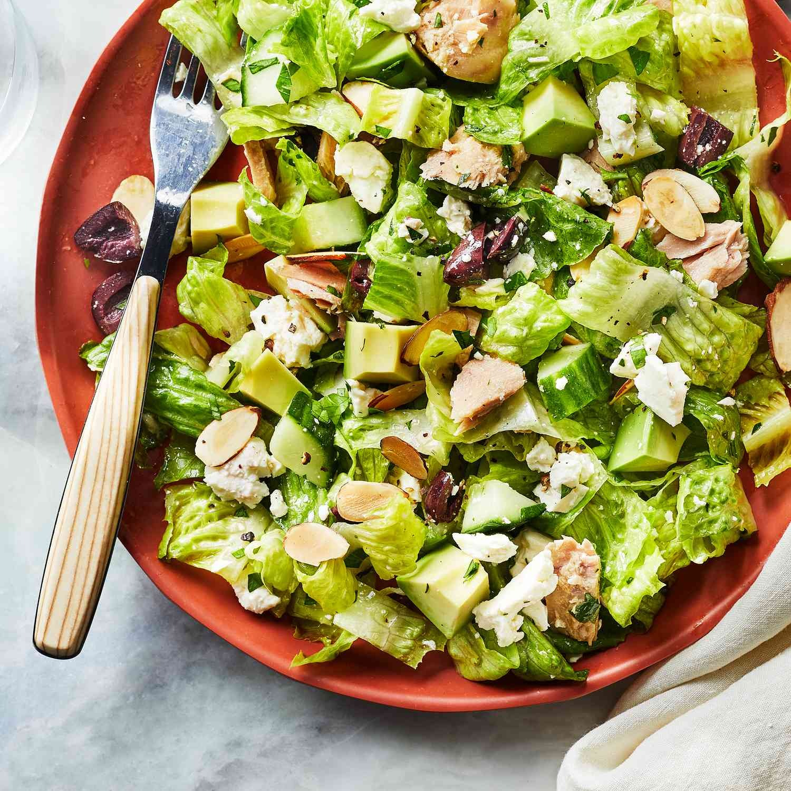

Tuna Salad with Avocado

Description
Tuna salad is a tasty, easy-to make-dish, and makes an excellent choice of lunch for those who want a healthy option.
This recipe includes avocado to add something a bit different to the regular tuna salad.
Ingredients
- 3 tablespoons extra-virgin olive oil
- 2 tablespoons lemon juice
- ¼ teaspoon salt
- 2 medium avocados, chopped (about 2 1/2 cups)
- 2 (5 ounce) cans solid white tuna in oil, drained and flaked
- 4 cups romaine hearts
- 1 cup chopped English cucumber
- ⅓ cup crumbled feta cheese
- ¼ cup toasted sliced almonds
- ¼ cup chopped pitted Kalamata olives
- 3 tablespoons chopped fresh flat-leaf parsley
Method
- Whisk oil, lemon juice and salt together in a large bowl; add avocados and toss gently to coat thoroughly.
- Add tuna, romaine, cucumber, feta, almonds, olives and parsley to the avocado mixture; toss gently to combine.
- Serve immediately or refrigerate for up to 1 hour.